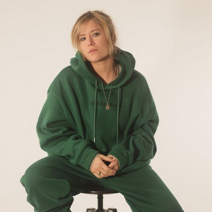

Elane
Nacida en Barcelona el año 1993, Elane se interesó por la música urbana desde pequeña. Especialmente influenciada por el Hip Hop de los 90s y los 00s, empezó a componer sus primeros temes a los 17 años y subió a un escenario en el 2018 por primera vez.
En sus letras Elane refleja una clara temática social, revolucionaria y feminista. Tras varios exitosos singles y clips como “Hiprofenia”, “Axinita” o “Niente” finalmente empaquetados en 2020 en el EP digital ‘#Sondeesas’, Elane celebró su primer lanzamiento digital con la salida de un vinilo 7 pulgadas de edición limitada con la celebradíssima “Hiprofenia” en la cara A y el tema inédito “Otra copa” en la B.